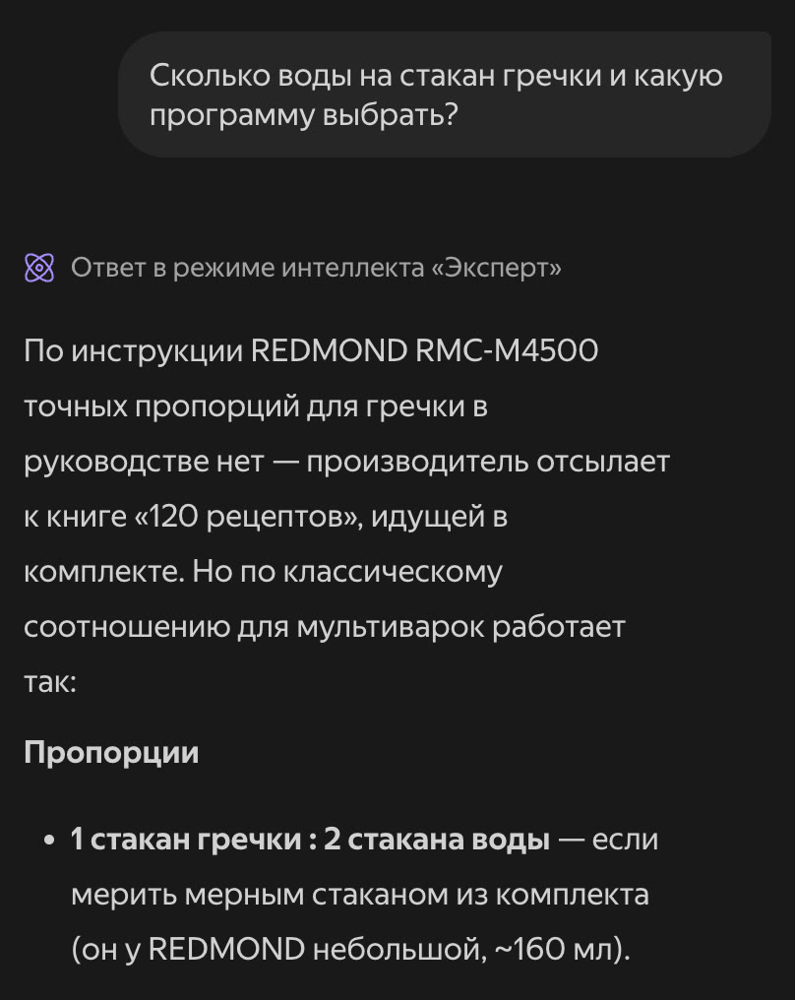
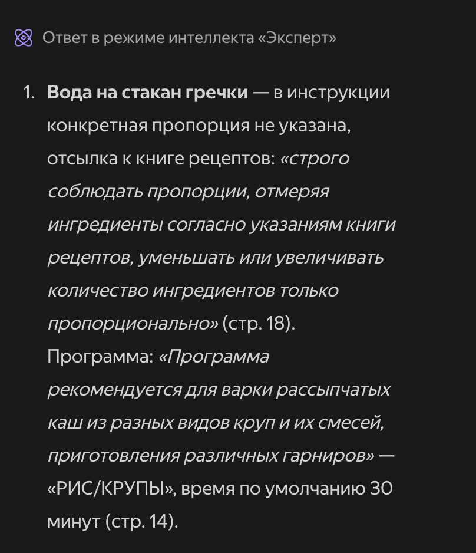
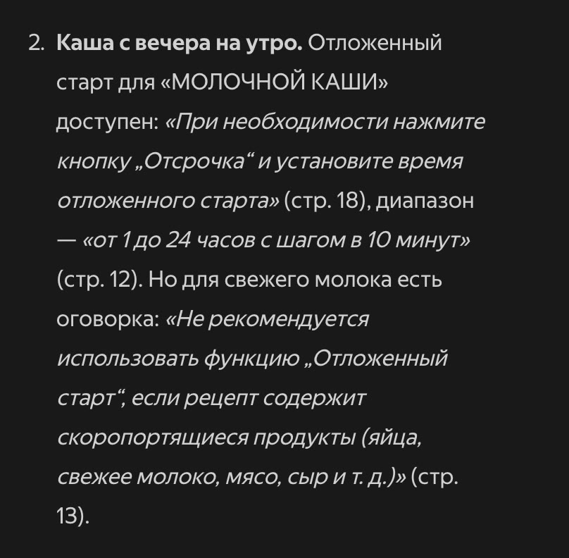

Бесплатные уроки · Алиса и Шедеврум
Спросишь Алису по инструкции к своей технике и отличишь ответ из файла от догадки.
Инструкция к мультиварке — 72 страницы на двух языках. А вопрос возникает у плиты: сколько воды, какая программа, можно ли поставить на ночь. Алиса AI прочитает файл за тебя меньше чем за минуту. Только отвечает она сразу двумя голосами — по инструкции и «как обычно бывает», — и звучат они одинаково. Учимся получать ответ, в котором каждую фразу можно найти в файле поиском.
Мы взяли официальную инструкцию к мультиварке REDMOND RMC-M4500 и задали вопрос, который задают все. Ответ пришёл меньше чем за минуту, Алиса сама включила режим «Эксперт»:

Начало честное: пропорций для гречки в инструкции нет, производитель отсылает к своей книге «120 рецептов». Но следом — «1 стакан гречки : 2 стакана воды», если мерить стаканом из комплекта, «он у REDMOND небольшой, ~160 мл». Мы проверили по файлу: мерный стакан в инструкции есть только в списке комплекта — одна штука, без объёма. Ни пропорции, ни «160 мл» там нет. Это ответ из головы нейросети.
А дальше снова верное: программа «РИС/КРУПЫ», 30 минут по умолчанию, промыть крупу до чистой воды — всё это в инструкции есть. Беда не в ошибке, а в том, что верное и придуманное звучат одним голосом. Чтобы отделить одно от другого, пришлось бы читать 72 страницы — то, от чего мы и хотели избавиться.
Задай вопросы списком в одном сообщении. Главное в запросе — три вещи: «только по инструкции», «дословная цитата и номер страницы» и разрешение ответить «не сказано». Без такого разрешения нейросеть охотнее досказывает сама.
Отвечай только по прикреплённой инструкции. К каждому ответу — дословная цитата и номер страницы. Если ответа в инструкции нет, напиши «В инструкции не сказано» и ничего не добавляй от себя. Вопросы: 1. [вопрос] 2. [вопрос] 3. [вопрос]
Новый чат, та же инструкция, четыре вопроса: гречка, молочная каша на утро, посудомоечная машина и сколько часов каша может стоять на подогреве. Про гречку ответ теперь другой:

Ни «160 мл», ни «классического соотношения». Только то, что в файле: пропорции — по книге рецептов, программа — «РИС/КРУПЫ», 30 минут. И у каждой фразы есть адрес — страница.

Про кашу на утро вышло полезнее, чем мы ждали. Отложить старт можно, до 24 часов. Но в инструкции есть оговорка: со скоропортящимися продуктами, в том числе со свежим молоком, отложенный старт не рекомендуется. С подогревом так же: тепло держится 24 часа, а советуют не больше двух-трёх — иначе меняется вкус. Такие оговорки при беглом чтении и пропускают.
Мы проверили все восемь цитат — каждая нашлась слово в слово. Ошибся только номер страницы: «от 1 до 24 часов с шагом в 10 минут» Алиса отнесла к странице 12, а это страница 13. Поэтому ищи по словам цитаты, а не листай до номера.
Возьми инструкцию к своей технике: мультиварке, стиральной машине, роутеру. Задай Алисе три вопроса — один такой, на который ответа в инструкции, скорее всего, нет. Найди каждую цитату поиском по файлу.
Урок рассчитан на сайт alice.yandex.ru. Мы проверяли со входом Яндекс ID, у аккаунта была опция Алиса Плюс; по справке Яндекса файлы доступны и без неё. Названия кнопок могут отличаться в приложении и после обновлений. Подписка на наше обучение не включает платные тарифы нейросетей.
Алиса AI — запросы урока проверены 5 октября 2026 со входом Яндекс ID, режим «Авто». Документ — официальная инструкция к мультиварке REDMOND RMC-M4500 (PDF, 72 страницы); все цитаты сверены с файлом поиском. Форматы и размер файла — по справке Алисы AI о файлах.
Следующий урок — «Афиша для чата класса за 5 минут». Нарисуешь афишу, прочитаешь её по буквам и узнаешь, куда попадёт картинка и что с ней можно делать.
Читать следующий урокКак войти и что ещё умеет Алиса и Шедеврум — разбор на сайте. Все нейросети, которые открываются из России, — на одной странице.